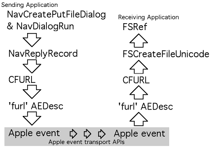

|
|
This Technote describes the proposed typeFileURL
data format and discusses how to use this data type to pass references
to files between applications in Mac OS X. This new data type
provides a convenient way to pass references to files that have yet
to be created between applications running in Mac OS X.
[Jun 07 2001]
|
The FSSpec data type is not suitable for encoding
information about files in Mac OS X. Most importantly, FSSpecs
cannot encode long or Unicode file names such as those used in the
Mac OS X file system. In addition, Directory ID numbers and volume
reference numbers are application specific in Mac OS X. This means
that a directory ID number or volume reference number used in one
application will not have any meaning for another applications. FSSpec
records include volume reference numbers, directory ID numbers, and
do not contain sufficient space for long file names. As a result,
FSSpec do not provide suitable encoding for storing references
to files or for passing references to files between applications
in Mac OS X.
For the most part, Alias records encoded in
Apple events provide suitable remedy for the shortcomings of
FSSpec records, except for one case - references
to files that have yet to be created. In these cases, the
proposed typeFileURL is the best way to provide
a such a pre-determined file reference.
Users will expect to be able to use longer file names in
Mac OS X, and the new Navigation Services routines
will allow them to do this. Most importantly, for the purposes
of this document, it should be noted that calls to NavPutFile
have been replaced with the NavCreatePutFileDialog/NavDialogRun
calling sequence that allows a user to provide a longer, Unicode file
name that is returned in a CFString. This document discusses
how this information can be packaged up for transmission between
applications and transmission within Apple event factored applications.
typeFileURL Defined
In a nutshell, typeFileURL is a core-foundation URL
encoded to a stream of bytes in UTF8 format. This is the suggested
data type to use when your application would like to create a reference
to a file that has yet to be created. Furthermore, there are a number of
other good reasons to use this type; depending on your processing
requirements, you may wish to use this data type in a number of different
circumstances. Here are some properties and features of the
typeFileURL data format:
typeAlias and typeFSRef require deterministic
reference and cannot refer to files that have yet to be created.
typeFileURL uses the weak "by name" style reference provided
by URLs, and as such is quite capable of providing pre-determined
references to files.
typeFileURL provides facilities encoding of special characters
in directory and file names including '/', ':', and Unicode characters.
- It is the same data format as the
'furl' Drag Flavor. This flavor is attached
to drag references containing HFS flavors. It is used internally by the Drag Manager
as follows:
- In the sending application: when a HFS flavor is added to a drag item,
the drag manager encodes a
'furl' flavor in the drag item referencing
the same file.
- In the receiving application: The
'furl' flavor is decoded and used to
update the FSSpec record's fields in the HFS flavor before it is passed to
the receiving application.
Here, there result is that an application can use the HFS flavors directly without
worrying about stale directory ID numbers of volume reference numbers. But, as well,
an application that uses the typeFileURL data type may use the encoded
'furl' flavor directly, instead of using the HFS flavor.
- URLs provided by Core Foundation encode mount-point information. As such,
typeFileURL references are capable of distinguishing between volumes
with the same name.
typeFileURL does not encode any process-specific information
such as volume reference numbers or directory ID numbers. As such, it is valid
to pass this format from process to process.
typeFileURL are static non persistent references. That is,
if a typeFileURL is created that references a file and that file
is later moved, the typeFileURL will no longer reference that
file. For this type of functionality, you should consider using the
typeAlias format.
The routines shown in listing 1 provide a functional definition for the
typeFileURL format. These routines can be used to convert
Apple event descriptor records containing typeFileURL data
into Core Foundation URLs. Core Foundation URLs themselves provide clear
reference to files that can be used by applications.
/* encode -> AEDesc
FURLDescFromCFURL encodes a Core Foundation URL into a
Apple event descriptor record and returns a pointer to
the descriptor record. If an error occurs, NULL is
returned. */
AEDesc * FURLDescFromCFURL(AEDesc *furlDesc, CFURLRef url) {
CFDataRef theData;
OSStatus err;
AEDesc *furlResult;
/* set up locals to a known state */
furlResult = NULL;
/* encode the URL to a UTF8 data string */
theData = CFURLCreateData(nil, url, kCFStringEncodingUTF8, true);
if (theData != NULL) {
/* put the data into the descriptor */
err = AECreateDesc('furl', CFDataGetBytePtr(theData),
CFDataGetLength(theData), furlDesc);
/* if successful, set the result */
if (err == noErr) {
furlResult = furlDesc;
}
/* release the local buffer */
CFRelease(theData);
}
/* return a pointer to the furl descriptor */
return furlResult;
}
/* decode -> CFURL
FURLDescToCFURL decodes an Apple event descriptor record
containing a furl descriptor and returns a Core Foundation
URL. If an error occurs, NULL is returned. */
CFURLRef FURLDescToCFURL(AEDesc *furlDesc) {
Ptr dataPtr;
Size bytecount;
CFURLRef url;
OSStatus err;
/* set up locals to a known state */
url = NULL;
/* verify the type is correct */
if (furlDesc->descriptorType == 'furl') {
/* count the bytes in the descriptor */
bytecount = AEGetDescDataSize(furlDesc);
/* allocate a local buffer for the bytes */
dataPtr = malloc(bytecount);
if (dataPtr != NULL) {
/* copy the bytes from the descriptor */
err = AEGetDescData(furlDesc, dataPtr, bytecount);
if (err == noErr) {
/* create a Core Foundation URL */
url = CFURLCreateWithBytes(nil, dataPtr, bytecount,
kCFStringEncodingUTF8, nil);
}
/* deallocate the local buffer */
free(dataPtr);
}
}
/* return the new URL */
return url;
}
|
|
Listing 1. Routines illustrating how to encode and decode
'furl' Apple event descriptor records. These routines
provide a functional definition for this data type.
|
These are runtime data types used by applications for communications of
file locations. As such, a definition of the binary format for this type
is not provided in this document. However, developers who are interested
in discovering the exact details of the binary encoding used for this data type
should consult the Core Foundation documentation.
Back to top
When to use typeFileURL
The typeFileURL was specifically designed to allow reference to files
that have yet to be created. As such, its primary function is to allow
file naming and reference in "Save As..." style Apple events sent between
and within applications.
In an application that has been factored and sends Apple events to
itself for processing in response to user interface commands, the
typeFileURL is a necessary encoding mechanism as the
traditional encoding schemes not sufficient for encoding references
to files that have yet to be created in Mac OS X.
|

|
|
Figure 1. An illustration showing how the typeFileURL
format is used to encode references to files in Apple events. Note: in a
factored application, both the sending application and the receiving
application are one and the same.
|
Back to top
Creating a typeFileURL from a Navigation Services reply
Naturally, the first step in the process illustrated in Figure 1 is retrieving a
Core Foundation URL from the Navigation Services reply that references
the file that should be created. In Mac OS X, the Navigation Services
reply record returned by
a NavCreatePutFileDialog/NavDialogRun sequence
will contain a FSRef
referring to the folder where the new file should be created in the
first AEDesc record in AEDescList contained in
the NavReplyRecord's selection field, and the
name of the new file will contained in the CFString referred to by
the saveFileName field. Listing 2 illustrates one way this can
be done.
/* GetCFURLFromNavReply returns a URL referencing a file that
is yet to be created in response to a
NavCreatePutFileDialog/NavDialogRun sequence */
CFURLRef GetCFURLFromNavReply(const NavReplyRecord * navReply) {
OSStatus err;
FSRef parentFSRef;
CFURLRef parentURLRef, fullURLRef;
AEKeyword theAEKeyword;
DescType typeCode;
Size actualSize;
/* ensure locals are in a known state */
fullURLRef = NULL;
/* get the FSRef referring to the parent directory */
err = AEGetNthPtr(&navReply->selection, 1, typeFSRef,
&theAEKeyword, &typeCode, &parentFSRef, sizeof(FSRef), &actualSize);
if (err == noErr) {
/* convert the FSRef into a Core Foundation URL */
parentURLRef = CFURLCreateFromFSRef(NULL, &parentFSRef);
if (parentURLRef != NULL) {
/* add the file name to the end of the url */
fullURLRef = CFURLCreateCopyAppendingPathComponent(NULL,
parentURLRef, navReply->saveFileName, false);
/* release the path to the parent */
CFRelease(parentURLRef);
}
}
/* return the reference to the new URL */
return fullURLRef;
}
|
|
Listing 2. An example of how one could generate a Core
Foundation URL from a Navigation Services reply record returned
by a NavCreatePutFileDialog/NavDialogRun sequence.
|
Once the file reference has been encoded as a CFURL, a routine such as
FURLDescFromCFURL (see Listing 1) can be used to encode it into a Apple event
descriptor record as an 'furl' formatted descriptor. Once it has been
converted into this format, it is ready for transport in an Apple event.
Back to top
Creating a file referenced by a typeFileURL
For decoding an Apple event descriptor record containing a typeFileURL
your application would use a technique similar to the one presented in the
FURLDescToCFURL routine shown in Listing 1. This will provide a CFURL referencing the file that is to be created, which in turn can be used to generate both
a reference to the directory (where the file should be created), and the name
of the file to create. These items can then be passed to
FSCreateFileUnicode, shown in Listing 3, to perform the file creation
operation. Once the file has been created, it can be referenced using
a FSRef record.
/* CreateFileUsingCFURL creates the file referenced by
the CFURL using the supplied catalog parameters. */
OSStatus CreateFileUsingCFURL(
FSRef *newFileReference,
CFURLRef url,
FSCatalogInfoBitmap whichInfo,
const FSCatalogInfo * catalogInfo) {
CFURLRef parentURL;
CFStringRef fileNameRef;
FSRef parentDirectory;
UniCharPtr nameStringPtr;
OSStatus err;
/* set locals to a known state */
err = coreFoundationUnknownErr;
/* get the url to the parent directory */
parentURL = CFURLCreateCopyDeletingLastPathComponent(NULL, url);
if (parentURL != NULL) {
/* convert the URL to a FSRef */
if (CFURLGetFSRef(parentURL, &parentDirectory)) {
/* get the leaf name from the URL */
fileNameRef = CFURLCopyLastPathComponent(url);
if (fileNameRef != NULL) {
/* get the leaf name from the URL */
nameStringPtr = CFStringGetCharactersPtr(fileNameRef);
if (nameStringPtr != NULL) {
/* create the file */
err = FSCreateFileUnicode(
&parentDirectory,
CFStringGetLength(fileNameRef),
nameStringPtr,
whichInfo, catalogInfo,
newFileReference, NULL);
}
/* release the file name */
CFRelease(fileNameRef);
}
}
/* release the parent url */
CFRelease(parentURL);
}
/* return the status value */
return err;
}
|
|
Listing 3. An example of how one could create a file
referenced by a CFURL using the FSCreateFileUnicode routine.
|
Back to top
Advanced routines for using typeFileURL
Sample code presented in this document was chosen for illustration
and was designed to present ideas. More advanced users may wish to
consult sample code listings provided in the attached download file
These source files include examples showing how to:
- Implement Apple event coercion handlers for automatic conversion to/from
typeFileURL
typeChar, typeStyledText, typeUnicodeText, cFile, typeFSS, typeFSRef, typeAlias,
and typeObjectSpecifier
- Utility routines for using typeFileURL records in Apple event records.
Back to top
Downloadables
Back to top
|